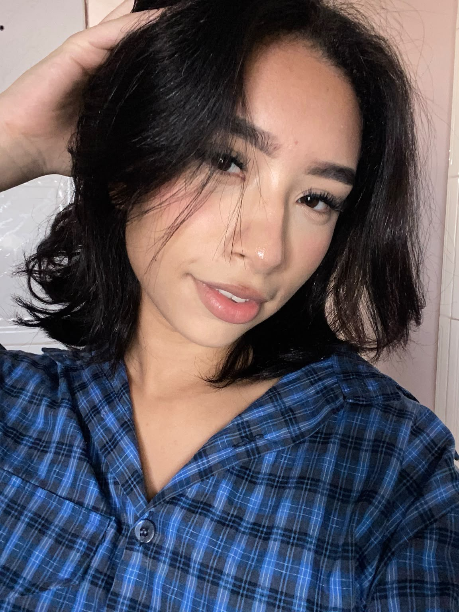

Sobre mim
Estratégia, criatividade e comunicação com propósito.
Olá, sou Sophia Marina, profissional da área digital, dedicada a ajudar pequenos negócios e instituições a fortalecerem sua presença online.
Meu trabalho une criatividade, planejamento e comunicação para transformar perfis comuns em vitrines digitais atrativas, capazes de gerar visibilidade, despertar interesse e aproximar marcas de seus públicos.

Minha missão
Desenvolver estratégias personalizadas que valorizem a identidade de cada marca e transformem a presença nas redes sociais em oportunidades de crescimento.
Como eu trabalho
Cada marca tem um jeito próprio de falar e de vender. Por isso, começo entendendo o negócio, o público e o que precisa ser comunicado. Depois planejo os conteúdos, organizo os roteiros e vou presencialmente fazer as fotos e os vídeos, para que o material mostre a marca como ela realmente é.
Depois da captação, edito os Reels, crio os Stories, preparo as legendas e deixo tudo organizado por formato e data, pronto para publicar.
O que me guia
- Planejamento estratégico: cada conteúdo tem um objetivo.
- Comunicação visual: estética cuidada, coerente com a identidade da marca.
- Conteúdo orientado a objetivos: mostrar produtos, informar e manter o relacionamento com o público.